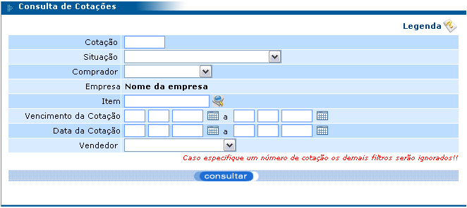
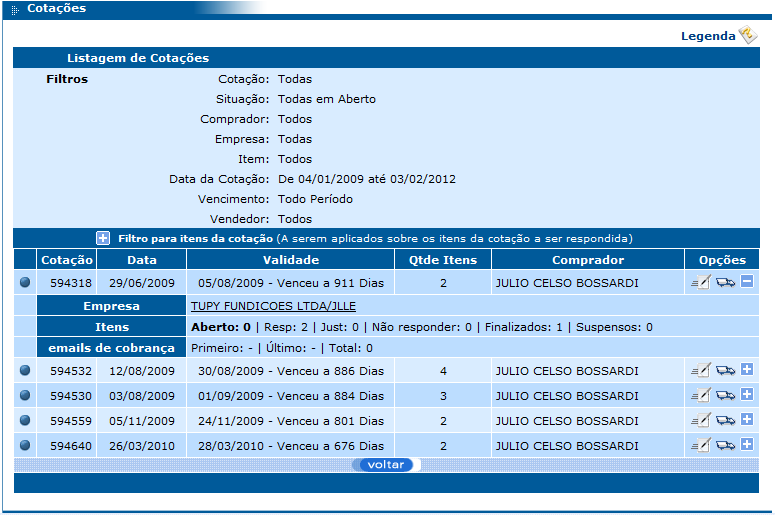
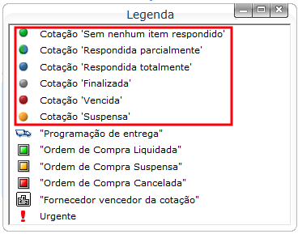
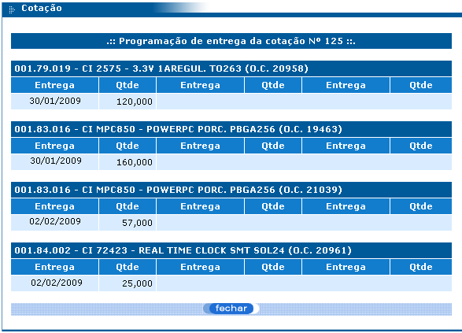
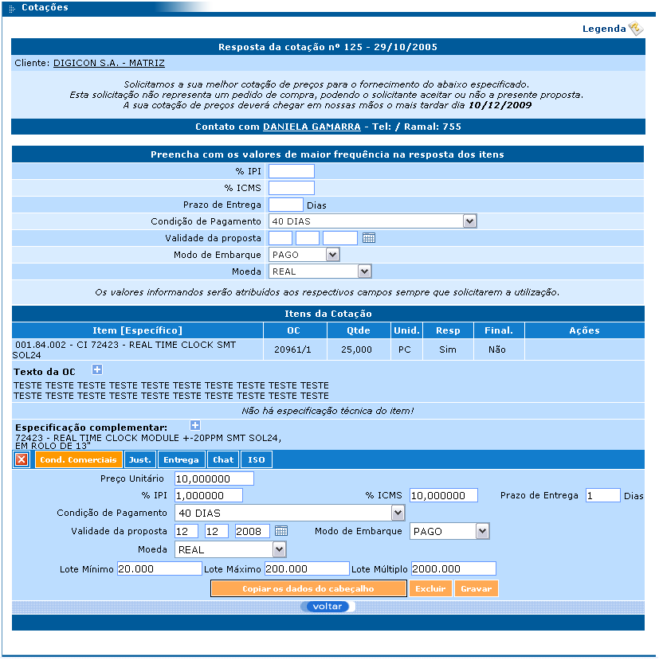
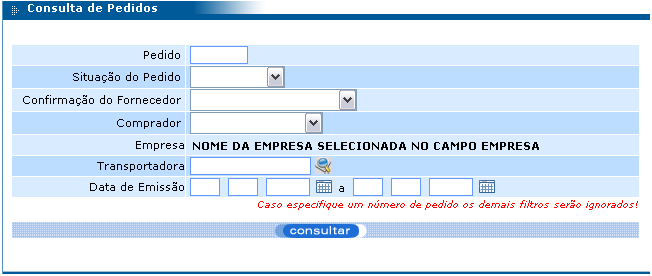
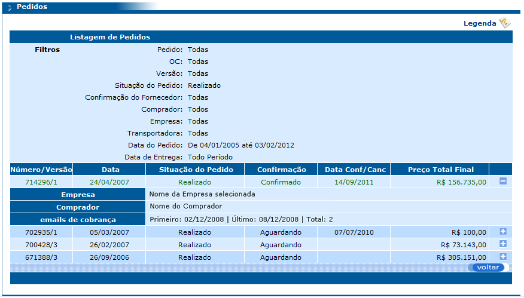
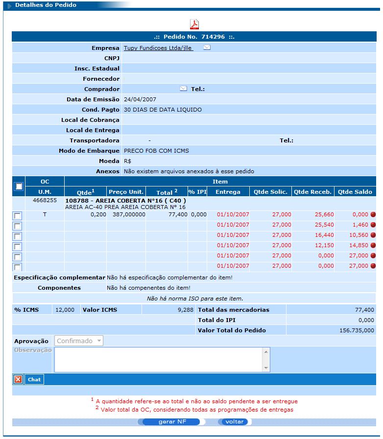

Documentação do Fornecedor - eProcurement
Este menu fornece acesso às consultas de OC, cotações e pedidos que serão detalhadas a seguir.
Por meio deste módulo o fornecedor pode consultar as cotações para respondê-las para a empresa que as solicitou. A consulta possui os seguintes filtros:
Após preencher os filtros conforme a necessidade e clicar no botão “consultar”, será exibida a listagem das cotações encontradas.
Para visualizar detalhes da cotação, basta clicar sobre o botão “+”. A figura acima mostra os detalhes da cotação 145.
Cada cotação da listagem terá sua situação representada por símbolos (coluna lateral esquerda da listagem) cuja legenda pode ser visualizada após clicar sobre “Legenda” no canto superior direito da tela.
Ao lado do botão “+” (figura 60), há um caminhão que, conforme podemos observar na legenda, representa a programação de entrega dos itens da cotação. Clicando sobre este caminhão, a programação referida é exibida. Esta programação é elaborada pelo responsável pela geração da ordem de compra que já informa em qual data a empresa precisa receber cada item e qual a quantidade desejada de do item para esta data. Observe:
A tela de listagem de cotações (figura 60) tem um filtro adicional que pode ser aplicado sobre os itens da cotação a ser respondida.
Para utilizar este filtro, basta preencher um ou mais campos do mesmo e clicar sobre alguma cotação da listagem. Fazendo isto, automaticamente a cotação será exibida e seus itens já serão exibidos de acordo com o que foi preenchido nos filtros.
Após clicar sobre qualquer cotação que se queira responder, será exibida a tela a seguir:
Observe que existem cinco botões logo abaixo do item da cotação: Cond. Comerciais (Condições Comerciais), Just. (Justificativa), Entrega, Chat e ISO.
Ao lado do botão “Cond. Comerciais” (destacado em laranja), existem um botão “X” que serve para fechar os detalhes exibidos quando os botões Cond. Comerciais, Just., Entrega, Chat e ISO são pressionados.
Para responder uma cotação, o fornecedor deve preencher as condições comerciais da cotação e, para isto, é preciso clicar no botão “Cond. Comerciais”.
Uma cotação pode conter vários itens e, sendo assim, existe um recurso que facilita o preenchimento das condições comerciais, ou seja, o valor de um campo pode ser digitado apenas uma vez e replicado para todos os itens. Observando a figura acima, antes da listagem “Itens da Cotação” existe uma área com campos como IPI, ICMS, Prazo de entrega, dentre outros; preenchendo qualquer um destes campos e clicando sobre o botão “Copiar dados do cabeçalho” que fica próximo ao botão “voltar”, os valores digitados nos campos desta área citada são copiados para seus respectivos campos na área de condições comerciais.
O botão “Gravar” que fica próximo ao botão “voltar”, serve para gravar as informações digitadas nas condições comerciais. Uma vez gravadas, estas informações já vão direto para banco de dados do ERP da empresa (cliente) em forma de resposta para a cotação.
O botão “Excluir” que fica ao lado do botão “Gravar”, serve para excluir e limpar todos os campos das condições comerciais. Isto faz com que as informações da condição comercial da cotação sejam perdidas e elas também serão removidas do banco de dados do ERP da empresa (cliente), ou seja, se antes a cotação tinha uma resposta do fornecedor, após clicar neste botão, ela não terá mais.
Ao clicar no botão “Just.” ao lado do botão “Cond. Comerciais”, é exibido um campo para que o fornecedor digite uma justificativa para o não fornecimento do item. Esta justificativa pode ter 250 caracteres.
Após preencher a justificativa, basta clicar no botão “Gravar” para que a empresa (cliente) receba esta justificativa.
Ao clicar no botão “Entrega” ao lado do botão “Just.”, é exibida a programação de entrega do item (data e quantidade) solicitada pela empresa (cliente) e que o fornecedor deverá obedecer.
Ao clicar no botão “Chat” ao lado do botão “Entrega”, é exibido um campo para o fornecedor digitar sua dúvida, sugestão ou resposta para a empresa (cliente). Após digitar a mensagem, basta clicar no botão “Enviar” para que a mensagem seja enviada para a empresa (cliente). Nesta área também é exibido um histórico das mensagens trocadas entre fornecedor e empresa (cliente).
Ao clicar no botão “ISO” ao lado do botão “Chat”, é exibida a norma ISO do item, se existir alguma norma cadastrada para este item no ERP da empresa (cliente).
Depois que o fornecedor responde a cotação, a empresa (cliente) designa um fornecedor vencedor para a cotação e gera um pedido dos itens desta cotação para o fornecedor vencedor. Esta consulta serve para que cada fornecedor pesquise os pedidos gerados para ele e faça a confirmação ou cancelamento do mesmo. Ao confirmar um pedido, o fornecedor estará dizendo para seu cliente que ele fará a entrega do mesmo.
Esta consulta possui os seguintes filtros:
Após preencher ou não o filtro da consulta e clicar no botão “consultar”, é exibida uma listagem dos pedidos que se encaixam no filtro utilizado contendo os campos Número, data e situação do pedido, confirmação e valor. Também são exibidos os botões “+” e “-” para exibir e ocultar os detalhes do pedido. Esses detalhes são: o nome da empresa (cliente), o nome do comprador responsável pelo pedido no cliente, e informações sobre envio de emails de cobrança. Observe:
O campo Situação do pedido pode ser:
Atrasado: pedido cujos itens estão com programação de entrega em vigor e a data de entrega é inferior à data atual;
Cancelado;
Liquidado: pedido com todos os itens entregues pelo fornecedor.
Realizado: pedido já realizado que não permite alteração; se for necessário alterá-lo, será preciso criar uma nova versão do mesmo;
O campo Confirmação pode ser
Aguardando: pedido aguardando confirmação do fornecedor;
Confirmado: pedido confirmado pelo fornecedor;
Cancelado: pedido cancelado pelo fornecedor, o que significa que ele não entregará os produtos do pedido.
Para fazer a confirmação de um pedido, basta clicar sobre ele na listagem de pedidos (após consultar) e, na tela que aparecer, selecionar a opção “Confirmado” no campo Aprovação e clicar no botão “Gravar” que fica no rodapé da tela, conforme mostra a figura a seguir:
Após gravar o pedido, é exibida uma mensagem dizendo que o pedido foi gravado com sucesso. Sendo assim, agora é possível gerar a nota fiscal do pedido.
Para gerar a nota fiscal, basta consultar novamente o pedido, clicar sobre ele na listagem para que a tela de detalhes do pedido (figura acima) seja exibida. Após isto, selecione os itens para os quais se deseja gerar a nota fiscal (clique sobre a caixa de seleção destacada em verde na figura acima) e clique no botão “gerar NF”.
Depois que a nota fiscal do pedido foi gerada, ela precisa ser preenchida. Este preenchimento é feito no módulo “Notas Fiscais” que será explicado a seguir. É importante ressaltar que o lançamento da nota fiscal deve ser realizado após o faturamento do pedido (emissão da nota fiscal física).
Um pedido pode ser cancelado apenas se este ainda não foi confirmado, ou seja, apenas se o campo “Confirmação” deste pedido estiver como “Aguardando”. Para realizar este procedimento, basta consultar o pedido em questão, clicar sobre ele na listagem exibida e, no campo “Aprovação” da tela que aparecer (este campo fica lá no final da tela, perto dos botões), selecione a opção “Cancelado” e clique no botão “gravar”.
Fazendo isto, o pedido estará cancelado e o cliente saberá que a entrega dos produtos solicitados no pedido não serão entregues.